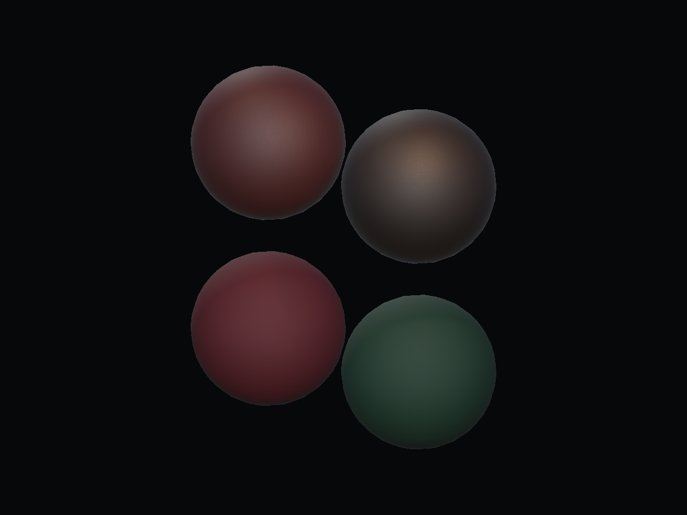
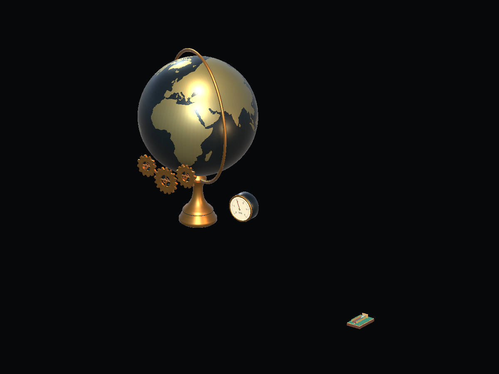
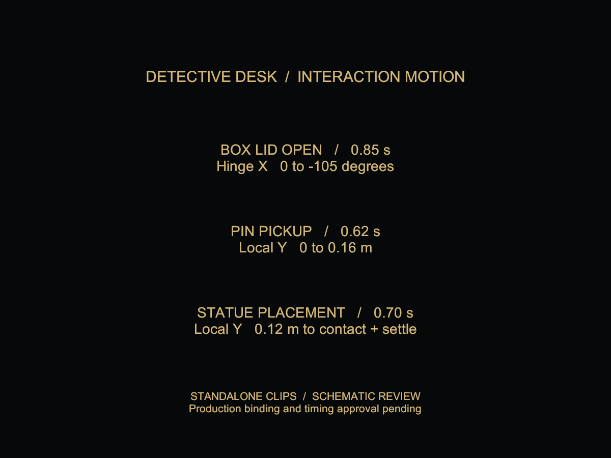
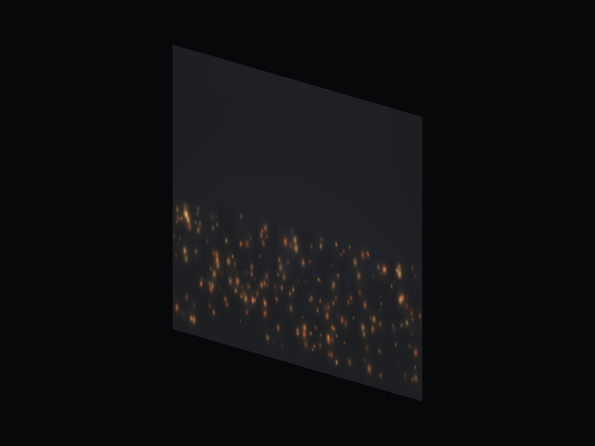
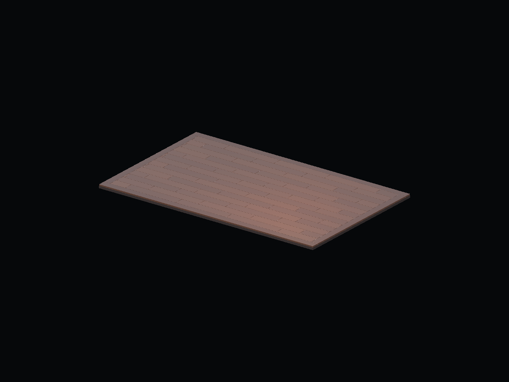
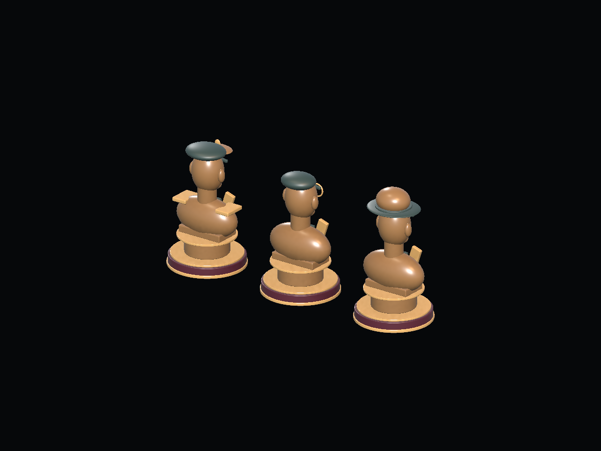
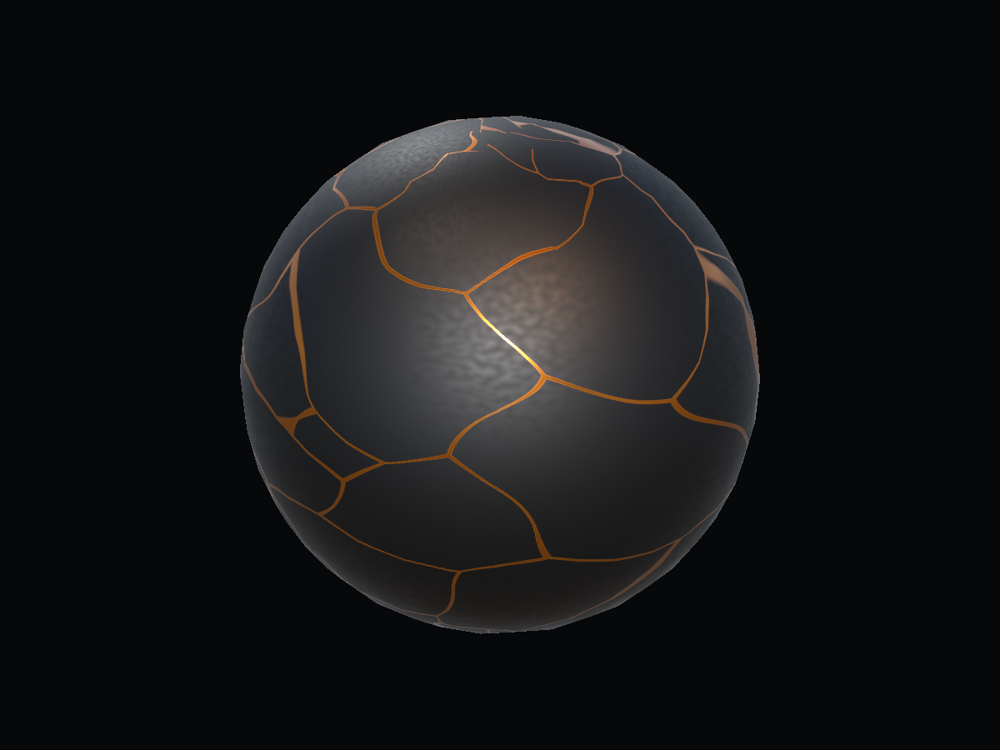
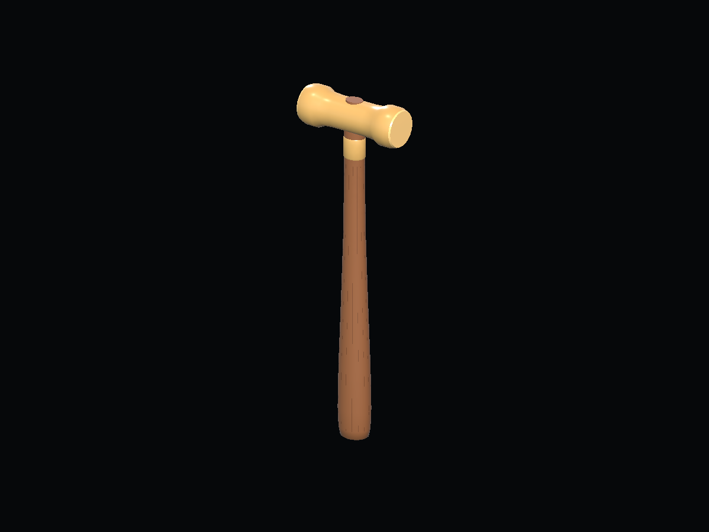
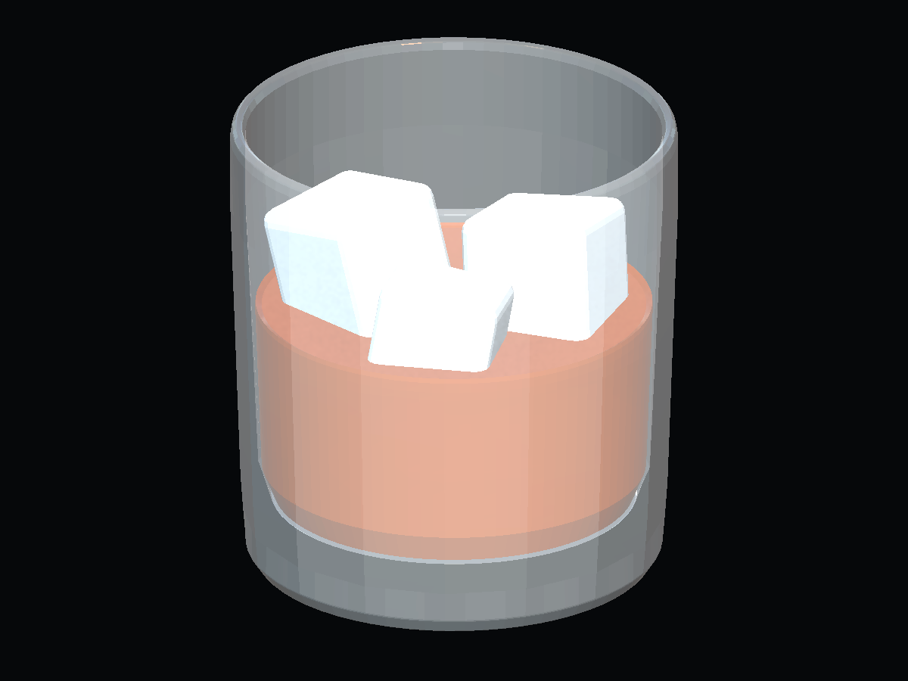
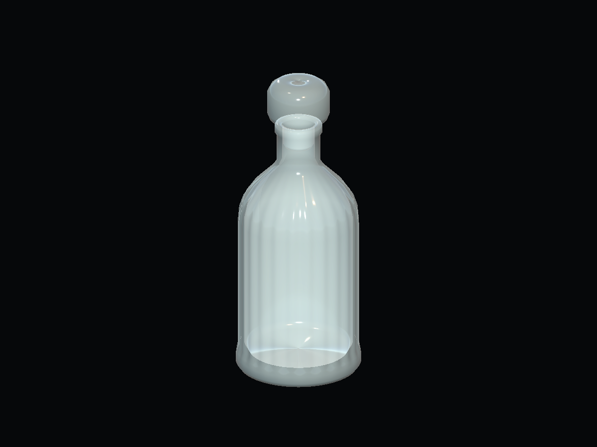

 DD-37 · Textures / ShaderFabric and leather PBRNeeds Review Four material variants; final sheen and texture scale need review.Read asset report · Open output folder
 DD-40 · Unity animationMechanical animationsNeeds Review Standalone clips and demo; production-rig behavior and gameplay integration are unverified.Read asset report · Open output folder
 DD-41 · Unity animationInteraction animationsNeeds Review Endpoint and sampled-pose checks passed; screenshot does not demonstrate production-model motion.Read asset report · Open output folder
 DD-08 · Texture / UnityExterior city backdropNeeds Review Standalone texture; window placement and final lighting need review.Read asset report · Open output folder
 DD-09 · BlenderFloor / backgroundNeeds Review Model candidate; surface finish and gameplay-camera fit need review.Read asset report · Open output folder
 DD-20 · BlenderCollectible statuesNeeds Review Modular bust candidates; source proportions and materials need review.Read asset report · Open output folder
 DD-21 · Shader / TextureKintsugi materialNeeds Review Gold seam material; emission keyword was subsequently removed and glow remains unverified.Read asset report · Open output folder
 DD-22 · BlenderJeweler hammerNeeds Review Standalone model; final finish and gameplay integration need review.Read asset report · Open output folder
 DD-23 · BlenderWhiskey glassNeeds Review Transparent-alpha correction shows fill and ice; physical refraction remains unverified.Read asset report · Open output folder
 DD-24 · BlenderWhiskey bottleNeeds Review Model and preview passed after export correction; final glass response needs review.Read asset report · Open output folder